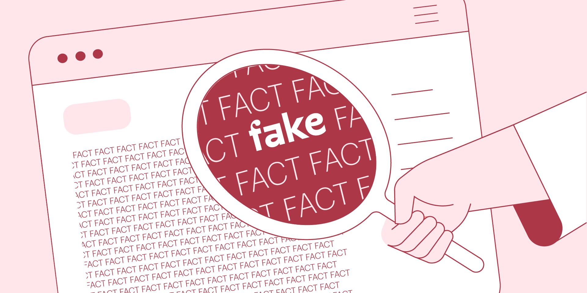

The Impact of Technology on Society
By Group 51 (my group) and Module 3 in DATA1100
The problem
With the advent of digital media, the potential for fake news, bullshit and alternative facts have proliferated. The creation of images, sound and text through artificial intelligence could increase the speed and scale of this phenomenon and drastically influence how we interpret current events, further influencing our political attitudes and elections.
The use of AI-generated images have already been used in the U.S election campaign leading up to the coming 2024 Presidential Election. In 2025 Norway will host its Parliamentary Election, how should we prepare for the use of this technology?
The Norwegian government have asked for advice on how to deal with the use of AI in political campaigns and elections. The current government proposal is that a law should be in place before the 2025 Norwegian election, banning all use of AI in political campaigns—including all AI-generated text, images, sound, and video.
Should this law be implemented, and what might be the consequences?
Fake news | by American Psychological Association
Our view
Even if the law is difficult to enforce, it should still be passed into action to discourage use of it. If the law is not implemented,
political leaders might use feign ignorance if their political view is different from the societal norms. Striking the right balance between regulating ai in
political campaigns and allowing innovation can be challenging. While some argue for strict regulations to prevent ai misuse, others believe that innovation in
campaign technology can lead to more engaging and informative political discourse. It's worth noting that addressing the ethical challenges posed by ai in political campaigns
often involves a combination of legal regulations, technological safeguards, and public education to ensure responsible and fair campaign practices. But ultimately politics
will always be more healthy in a hypothetical world where artificial inteligence never exists.

Fake news | by Bidit
Related Links
The Impact of Technology on Society
By Group 51 (my group) and Module 1 in DATA1100
The problem
Today the global infrastructure of the internet is, to a large degree, dependent on physical sub-sea and underground cables. Despite the global nature of the internet, the very fact that it relies on physical cables makes its flow of information sometimes subject to national borders. One recent example of this is the new Norwegian E-Law (2020), which propose that the intelligence service can monitor and collect all data that goes across the national border.
As society becomes increasingly digitalized, internet cables can also be seen as critical infrastructure. Internet cables, both in the North-Sea and of the coast of Taiwan is suspected to have been deliberately sabotaged.
An estimated 2,5 billion people in the world do not yet have access to the internet. To overcome the physical limitations of internet cables, companies like Starlink and the EU are working on providing internet access through satellites. Elon Musk’s Starlink is today the largest global provider of satellite internet with over 4,500 satellites in orbit. They expect to have 42,000 new ones in orbit in the coming years.Imagine that you are part of a group of experts in computer technology that have been given the task of exploring what the potential impact of satellite internet technology might have on society.
Fake news | by Gloabal Infrastructure
Our view
Satellite internet technology might be a positive solution since it gives global connection and creates a bridge across a digital border in the world today. The global access might enable education, development of infrastructure and economy, and access to social safety nets. At the same time, with the time and resources we have at hand, it is difficult to agree if this technology is exclusively good or bad for society. In the next paragraph, we will discuss potential consequences that might be unintended. These factors increase the complexity of the question at hand. Therefore, we have been unable to make up our minds.
 Fake news | by Pixalytics
Fake news | by Pixalytics
Related Links
a